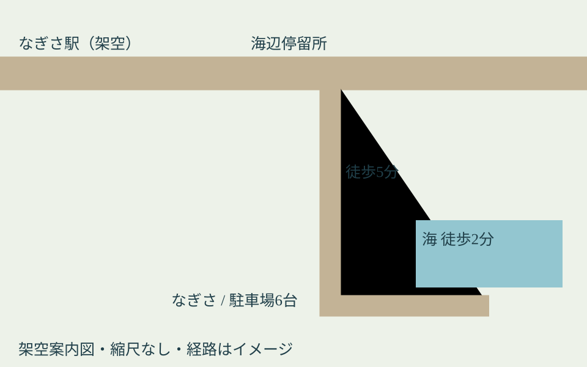

アクセス・よくある質問
架空県なぎさ市海岸町0-0（実在しないデモ住所）

駐車場6台無料。架空のなぎさ駅から架空バス15分・海辺停留所から徒歩5分。海まで徒歩2分。
よくある質問
食事はありますか？
食事なし、素泊まりのみです。
駐車場はありますか？
6台無料です。
チェックインは何時ですか？
15:00～20:00、チェックアウト10:00です。
サイトで予約できない場合は？
デモの空室検索を提供しています。専用デモアプリで予約者入力・確認・予約確定ができます。デモの連絡案内をご覧ください。実際の連絡・予約は受け付けません。
デモのため電話受付なし / demo-contact@example.invalid
連絡のご案内